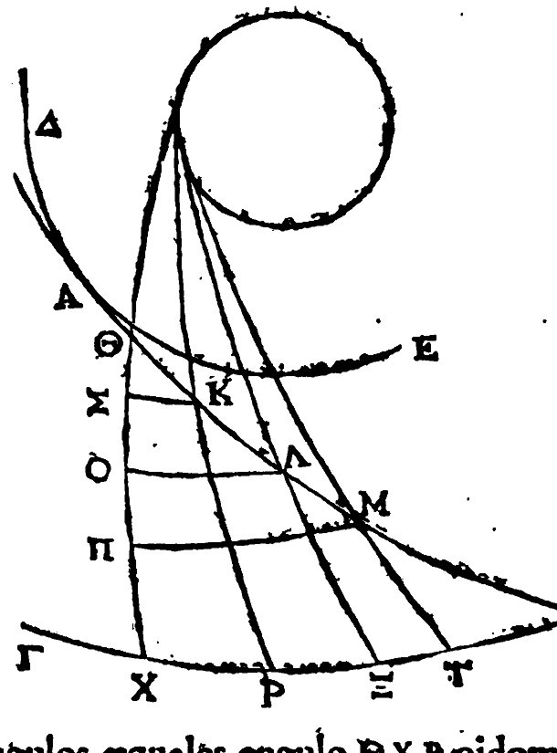

Prop. XII. (Halley 1758, pp. 77–78)¶
Menelai Alexandrini Sphaericorum Lib. II Prop. XII (Halley 1758, pp. 77–78)
Enuntiatio (Halley 1758, p. 77)
Si fuerit circulus Sphaerae maximus, quem contingat aliquis è circulis parallelis; & inter punctum contactûs & parallelorum maximum capiantur duo arcus aequales; & ducantur arcus circulorum per terminos sumptorum arcuum transeuntes, quorum aliqui sint arcus circulorum parallelorum, aliqui vero magnorum vel per parallelorum polos transeuntium, vel unum aliquem eundemque circulum parallelum, sed priori parallelo minorem, contingentium, & ad easdem partes super maximum parallelorum, ad quas inclinat circulus obliquus prius dictus, inclinantium: tum circuli paralleli sic ducti abscindent è maximis ductis arcus inaequales, quorum qui propior est circulo è parallelis maximo major erit remotiore. Quinetiam portiones in maximo parallelorum abscissae, quae propiores sunt communi circuli illius cum circulo obliquo primario intersectioni, minores fient iis quae ab eâdem longius distant.
Sit circulus Sphaerae magnus ΑΜΒ, quem contingat aliquis è circulis parallelis ΑΔΕ, & sit maximus parallelorum ΓΧΡΞΤΒ; & in circulo ΑΜΒ capiantur duo arcus aequales ΘΚ, ΛΜ; & describantur circulorum arcus transeuntes per horum terminos, è parallelis quidem arcus ΚΣ, ΛΟ, ΜΠ, è magnis vero, ΚΡ, ΛΞ, ΜΤ, vel per polos eorum transeuntes, vel qui omnes con-


tingant eundem circulum parallelum minorem circulo ΑΔΕ, & ad idem latus ad quod inclinat circulus ΑΜΒ inclinati sint super circulum ΓΒ: dico quod ΠΟ major est quam ΘΣ, & ΧΡ quam ΞΤ.
Quoniam angulus ΘΒΓ minor est recto, angulus vero ΘΧΒ non minor recto, erit arcus ΘΧ minor arcu ΘΒ. Cum itaque triangulum ΒΘΧ habet crus ΒΘ majus crure ΘΧ, neque ΒΘ majus est quadrante circuli, nec angulus Θ major est recto, & ex arcu ΒΘ abscissi sunt duo arcus aequales ΘΚ, ΛΜ; ducuntur etiam arcus ΚΡ, ΛΞ, ΜΤ constituentes cum basi ΒΓ angulos aequales angulo ΘΧΒ eidem relativo: & erit arcus ΧΡ (per 7m II. hujus) major arcu ΞΤ, & erunt duo arcus ΘΧ, ΜΤ simul sumpti minores duobus arcubus ΚΡ, ΛΞ simul sumptis; hoc est, arcus ΘΧ, ΧΠ simul sumpti minores erunt ipsis ΣΧ, ΧΟ simul sumptis. Hinc constabit ΠΟ majorem esse arcu ΘΣ. Angulus autem ΒΘΧ non major erit recto, uti dictum est, quia in triangulo ΒΧΘ angulus ad Χ non minor est recto, latera vero alium ejus angulum, nempe angulum ad Θ, continentia sunt singula minora quadrante circuli. Demonstratum autem est in libro primo Prop. XXI, quod si haec ita se habeant, angulus contentus ΒΘΧ non major erit recto. Q. E. D.
Hae VIIma & VIIIva Libri III. Theodosii.